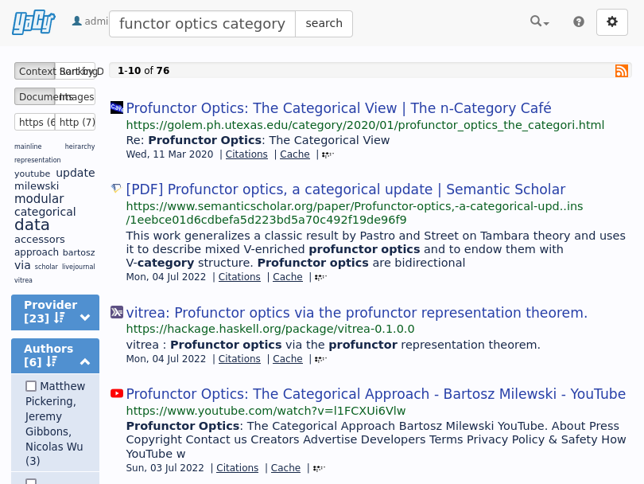

Personal internet search engine with YaCy
Tags: selfhosted
I set up YaCy as a private search engine. Every time I visit a webpage, YaCy automatically crawls that webpage along with all of the webpages it links to. This gives me a personal search engine which is highly centered on my interests.
For example, here’s a search of “profunctor optics category”. Of the top four results, three of them match DuckDuckGo’s, which is not bad:

Here’s a quick description of how I set it all up so that you can follow along.
Domain name
This will automatically replace the links and configuration in this guide with the domain name you choose.
Make sure to use your DNS provider to set an A record for the IP address pointing to the machine which will be hosting your YaCy instance. If you are using Wireguard or another VPN (detailed below) you should use a private IP address.
Hardware Setup
I use a DigitalOcean droplet as a VPS. I have a droplet with 50 GB disk, 2 GB RAM, 1 vCPU and 1 TB bandwidth for $12/month. There are probably cheaper hosts out there but I find DigitalOcean really simple so I use it. Anyway if you want to use DigitalOcean too, here is my referral code.
I have also set up Wireguard, which I use as a VPN to secure access to everything. That’s not strictly necessary, although it does provide some peace of mind. Without Wireguard or a similar VPN, you will have to expose YaCy directly to the Internet, which will make security updates more important. I’ll note throughout the places where I assume Wireguard so you can edit appropriately if you don’t want it.
Caddy
I use Caddy as my reverse proxy for selfhosting. I like Caddy because it’s easy to configure and can be set up to get automatic HTTPS certificates with LetsEncrypt.
Mostly, Caddy’s HTTPS integration “just works”. Not so simple in my case unfortunately. Since everything is only accessible via my Wireguard VPN, Caddy cannot use its default method to get HTTPS certificates via the HTTP-01 “challenge”. Instead I needed to use the DNS-01 challenge, which requires building Caddy specifically with support for your DNS provider. I use Namecheap, which has an API. You will probably need to adapt the below for whatever DNS provider you use (see here).
# Get a recent version of Go (skip if you already have Go).
$ wget https://go.dev/dl/go1.18.3.linux-amd64.tar.gz
$ tar -C /usr/local/ -xzf go1.13.5.linux-amd64.tar.gz
$ export PATH=$PATH:/usr/local/go/bin
# Install xcaddy, which will be used to build caddy.
$ go install github.com/caddyserver/xcaddy/cmd/xcaddy@latest
# Build Caddy with Namecheap DNS verification.
$ xcaddy build --with github.com/caddy-dns/namecheap
# Build results in an executable called "caddy"
# in the current directory.And here is the configuration I used. Save this in the same directory and
call it Caddyfile.
https://example.com:443 {
tls {
dns namecheap {
api_key {env.NAMECHEAP_API_KEY}
user {env.NAMECHEAP_USER}
client_ip {env.PUBLIC_IP}
endpoint https://api.namecheap.com/xml.response
}
}
encode gzip
reverse_proxy yacy:8090
}Docker Compose
I am a huge fan of shoving the things I self-host into Docker, mainly
because it makes the dependency management really easy. Here is the
docker-compose.yml I wrote for setting up YaCy and Caddy:
version: '3'
services:
yacy:
container_name: yacy
image: yacy/yacy_search_server:latest
restart: always
volumes:
- yacy_search_server_data:/opt/yacy_search_server/DATA
logging:
driver: "json-file"
options:
max-size: "50m"
max-file: "2"
caddy:
image: caddy:2
container_name: caddy
restart: always
ports:
- 10.0.2.1:80:80
- 10.0.2.1:443:443
volumes:
- ./caddy:/usr/bin/caddy
- ./Caddyfile:/etc/caddy/Caddyfile:ro
- ./caddy-config:/config
- ./caddy-data:/data
environment:
EMAIL: REPLACE_ME
NAMECHEAP_USER: REPLACE_ME
NAMECHEAP_API_KEY: REPLACE_ME
PUBLIC_IP: REPLACE_ME
LOG_FILE: "/data/access.log"
logging:
driver: "json-file"
options:
max-size: "50m"
max-file: "2"
volumes:
yacy_search_server_data:Replace the various REPLACE_ME parts with your information. Everything
is pretty bog-standard, but three things to note:
- Using
container_name: yacyis what let’s us useyacy:8090in theCaddyfilefrom before (to refer to port 8090 on the containeryacy). - We mount in the
caddyexecutable and theCaddyfilefrom above into the caddy container. - The
portsforcaddycontain the private IPv4 from before: 10.0.2.1. This means that it’s only accessible on that IP. If you don’t want Wireguard, see the next section. You will need to be careful to set up YaCy without creating a security hole.
Anyway, once you save the file as docker-compose.yml, you should be
able to start it with:
$ docker-compose -d upYaCy in particular takes a minute or so to start up the first time; you
can watch its progress with docker-compose logs -f yacy. If everything
goes well, you should also see logs indicating that Caddy was able to
obtain an HTTPS certificate with docker-compose logs -f caddy.
If you use Wireguard, feel free to skip past the next section. Otherwise, please read on.
Carefully set YaCy password without Wireguard
If you don’t use Wireguard, you will need to be careful with the initial
setup of YaCy. This is because YaCy starts with the username admin
and the password docker, and anybody can log into it with
administrator credentials before you do! To make things worse, YaCy
broadcasts your existence to peers on start up. Frankly this feels like
a huge security hole and I am not sure why it does not just generate a
good password for you and print it in the logs.
Anyway it is easy to work around this with some networking care. (I am
assuming you are not on a shared system.) First, set ports to only
bind on localhost:
ports:
- localhost:80:80
- localhost:443:443If you are installing YaCy on a remote system, you’ll also want to set up a portforward over SSH so that you can access the ports locally:
$ ssh -L8090:127.0.0.1:80 ...Now you can open http://localhost:8090/ConfigAccounts_p.html and configure the YaCy password. (You may also choose to do the configuration steps described in the next section below.)
Once you have done so and chosen a strong password, remove the
localhost.
ports:
- 80:80
- 443:443And do a docker-compose restart. Now your YaCy instance is exposed,
but it has a password.
YaCy essential configuration
At this point, you should be able to open YaCy. Try this link.
YaCy’s default settings are designed for peer-to-peer search engine usage, not for a private search engine like we want. Fortunately it’s possible to configure YaCy to behave correctly. It’s entirely using the GUI, so here’s what you need.
- Open ConfigAccounts_p.html and set an administrator
password. The default login is username
adminwith passworddocker. - Open ConfigAccounts_p.html and flip “Protection of all pages” to “on”. Then click “Set Access Rules”.
- Open ConfigBasic.html. Under “Use Case”, select “Search portal for your own web pages”. Then click “Set configuration” at the bottom.
- Open ConfigNetwork_p.html. Select “Robinson Mode” and then “Private Peer”. Then click “Save”. This stops you from all peer-to-peer traffic.
Add YaCy search to your browser
YaCy supports the OpenSearch standard. Your browser should document how to add a custom search engine (for your convenience: Firefox and Chrome). In short:
Firefox: visit your search homepage, right-click the address bar, and click “Add ‘YaCy’”.
Chrome: Go to Settings > Search Engines and click “Add”. You will need the “%s URL” of the search engine. Here it is: %s URL.
Automatically crawl sites you visit
I use Userscripts to make an API request to YaCy’s Crawler API to make YaCy index the page I am currently on along with all of its linked pages. I use Violentmonkey on desktop, and I use Userscripts on iOS.
If you have a userscript runner installed, you should be able to install the script by clicking this button:After installing the script, replace YACY_HOST with your YaCy base URL
and ADMIN_PASSWORD with your admin password.
To check if this works, browse a couple of sites and open the developer console. You should see “YaCy gave us a response 200” appear in the console. If you go to YaCy’s crawler monitor page at Crawler_p.html, you’ll see sites begin to fly by as YaCy performs crawls.
Conclusion
At this point everything should work end-to-end. The first day or so of browsing, your private search engine probably won’t be so useful beyond history search. But over time it will accumulate more and more documents, and become more useful. Make sure to monitor the disk space so that you can keep indexing new things.
One of the great things about YaCy is that you have total control over the search engine and all its knobs. You can do things like blacklist sites you don’t like or change the ranking algorithm. Congrats on your search engine!